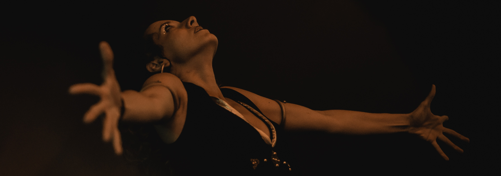

La Poésie des Vivants s'écrit au creux de nos os, sur les feuilles des arbres, dans les cœurs déchirés et sur les poussières d'étoiles.
La Poésie des Vivants se murmure et s'offre, s'attrape en plein vol, se hurle ou se danse, s'efface en cabrioles.
La Poésie des Vivants pour remettre du sang et des battements d'être dans des vagues de rimes, de proses et de peut-être.
Solo de poésie dansée - spectacle chez l'habitant et petits lieux intimistes - en tournée
« Je suis un passage. Entre hier et demain, entre la nuit et les autres nuits, entre toi… et nous. »
Une voix, un corps, une chaise et une valise. C'est tout ce qu'il faudra à D.CAD pour naître, encore et encore, sous les yeux et les oreilles curieuses de celles et ceux qui l'accueillent.
Récit en prose de moments de vie bouleversés, retournés ou émerveillés, D.CAD susurre à l'existence quelques paroles-poussières qui peut-être ne changeront rien. Mais si le cœur les écoutent, alors…
Durée : 1h
Autrice & interprète : Mélisande Pommier-Ferri
Seule en scène de poésie dansée pour brin d'herbe et grandes scènes de théâtres - en création
Première à l'Espace Michel Crépeau - Nieul-sur-Mer (17) - le 9 octobre 2027

« Le vent s'est levé, encore une fois, pour souffler sur mes terres et me parler de toi. Il a dit ton nom dans une langue étrangère, que seul mon sang connaissait : je ne le dirai pas. »
Tomber dans la vie et ses grands bras de tumultes. Danser, hurler, se mouvoir et se tordre, devenir arbre et corps-écorce. Retrouver le sens des racines et de l'humus, parler à la nuit. Vivre. Vivre.
De Mes Terres est une ode au vivant, à la pulse, au cœur rempli et vide mais qui bat, toujours. Une ode dansée-déclamée, pour une danseuse, trois micros et quelques branches, pour une poignée de terre et une forêt de poèmes.
Durée : 1h
Autrice & interprète : Mélisande Pommier-Ferri
Technique son & lumière : Florian Golgevit
Court métrage chorégraphique en nature sans peinture - en création
Sortie prévue en 2027

« Pose-toi des questions, qu'elles soient bonnes ou mauvaises. Offre-toi des réponses, mais ne donne pas de sens à ce qui n'en a pas. »
BLOOM fut initialement une performance pluridisciplinaire. Mais, comme la graine qui germe au fond du crâne, BLOOM deviendra une idée, une pensée : un film.
Mûrir, Fleurir et Mourir. Se rappeler que d'une existence je suis l'expérience. Danser, danser, danser.
Durée : 20 minutes
Autrice & chorégraphe : Mélisande Pommier-Ferri
Interprètes : Aurora Cavazzin, Corentin Asproni, Boris Gallet, Florian Guette, Emmy Doucoure
Musique : Yoan Richard
Réalisation : Hosanna Gartner
En parallèle des créations, Mélisande propose des ateliers mêlant écriture et mouvement pour explorer la poésie par le corps et les mots.
Mots et Mouvements
Atelier d'écriture de 3h, inspiré du spectacle D.CAD. Jeux et exercices d'écriture, expérimentations dansées, pour un voyage créatif accessible à toutes et tous.
Plan P.
Dispositif de poésie participative en espace public — lien vers le site internet à venir.
